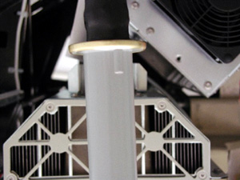

Operating Documentation
Direction 5196839-800, Rev# 6
RT16 and Xtra Service Info Adv
Operating Documentation |
| Required Persons | Preliminary Reqs | Procedure | Finalization |
|---|---|---|---|
| 1 | Timing Not Applicable | 5 mins | Timing Not Applicable |
The objective of this procedure is to seat the HV cable in the HV tank receptacle and safely secure the cable:
Put oil in receptacle
Seat cable
Reassemble
| Item | Qty | Effectivity | Part# | Manufacturer | |
|---|---|---|---|---|---|
| Spanner Wrench | 1 | - | Several available | - | |
| Item | Qty | Effectivity | Part# | Manufacturer |
|---|---|---|---|---|
| Transformer Oil (Mineral Based Oil Only) | About 20 mL (0.7 oz) | - | - | - |
| Tie wraps | - | - | - |
Follow lockout / tagout procedures.
Gantry covers should be removed.
Connect HV cable to HV Tank:
| Use only Mineral Based Transformer oil. Silicone based oil may damage the tank receptacle. | |
Put approximately 20 mL (0.7 oz) of transformer oil in receptacle.
| Ensure that there is a bump on the HV cable facing the front
of the gantry for insertion. Ensure that you add enough oil. | |
Slowly insert the cable, to engage the connector pins, and seat the cable in the well. Make sure to align the key and slot in the receptacle. Overfill the receptacle. Oil should rise to the top of receptacle with a little bit pushing out as cable seats. If not, add more oil and retry until it does.
Illustration 1: HV Cable Key

Tighten the cable locking ring.
Rotate the cable strain relief for a clean cable dress.
| Do not over-tighten the locking ring. Over-tightening can deform the cable plug sealing surfaces, break the oil seal between receptacle and housing, twist the receptacle, and disrupt internal wiring. | |
Use the spanner wrench to tighten the locking ring. Make sure that oil does not leak.
| IF YOU GET OIL ON YOUR HANDS, WASH THEM NOW. | |
Carefully wipe up all excess oil.
| Incorrectly sealed and secured HV cable can result in damage to the tank, tube, or other parts of the gantry. | |
Be sure to route the HV cable properly, using the hooks attached to the Inverter and the bracket on top of the aux box. Use tie-wraps to secure the cable to the hooks. Ensure that hook screws have the proper torque applied (2.3 N-m / 1.7 lb-ft / 20.4 lb-in / 23.5 kg-cm).
Check for oil leaks if not already called for in your procedure. Do this by rotating the tube to the 6 o'clock position then back to the 3 o'clock position.